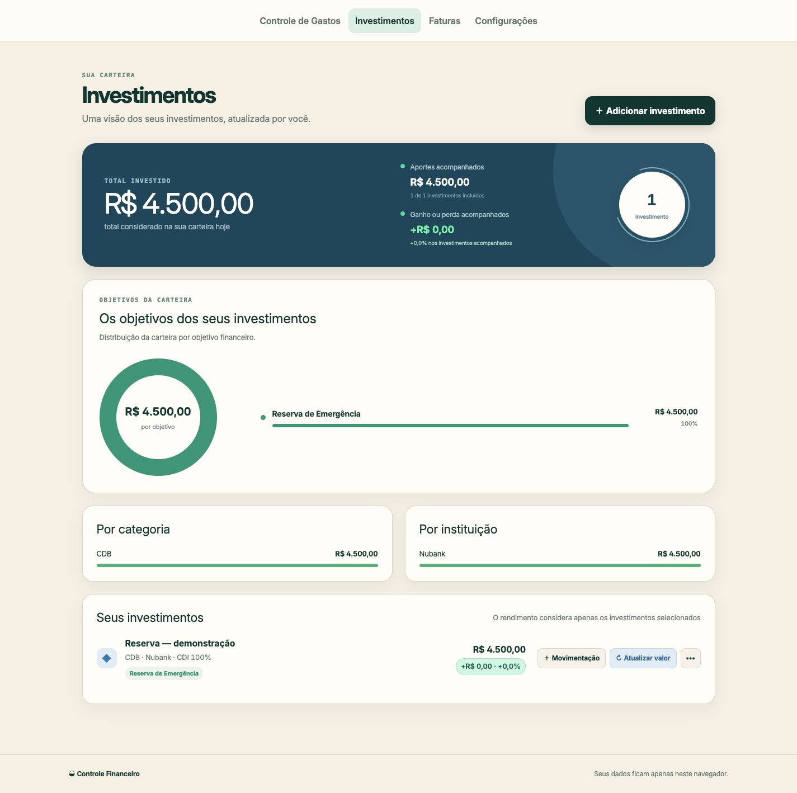

Investimentos e histórico
A necessidade de acompanhar o patrimônio e consultar períodos anteriores revelou uma oportunidade de ampliar o produto. As áreas de investimentos e histórico passaram a complementar a visão de gastos do período.
De contas manuais a uma ferramenta construída com IA para acompanhar gastos e investimentos em um só lugar.
Abrir aplicativo ↗Em uso recorrente há mais de cinco meses, a ferramenta reúne gastos e investimentos em uma visão centralizada. O acompanhamento facilita a consulta ao saldo do período, a identificação das categorias mais relevantes e a visualização da distribuição dos investimentos entre plataformas.

Gastos distribuídos entre diferentes bancos, Pix e crédito exigiam cálculos manuais para consolidar despesas e estimar o saldo disponível.
Conduzi o projeto desde o desenho inicial no Figma até a prototipação com Figma Make e a evolução da implementação com ChatGPT. A IA apoiou a transformação das funcionalidades definidas em uma ferramenta utilizável.
Minha atuação incluiu definição de escopo, priorização de funcionalidades, orientação das mudanças e testes das entregas. O uso contínuo permitiu identificar oportunidades, verificar regras e direcionar novas iterações.
A necessidade de acompanhar o patrimônio e consultar períodos anteriores revelou uma oportunidade de ampliar o produto. As áreas de investimentos e histórico passaram a complementar a visão de gastos do período.
Despesas reembolsáveis ou custeadas por terceiros precisam ser acompanhadas sem compor os gastos próprios. O controle separado permite consultar o total de um grupo de despesas, como transporte por aplicativo, sem somar lançamentos manualmente nem misturar esses valores ao orçamento principal.
A revisão da diagramação e da hierarquia das informações buscou tornar a navegação mais clara e facilitar a compreensão das funcionalidades, reduzindo a dependência de familiaridade prévia com a ferramenta.

O projeto conecta identificação de problemas, construção com IA e evolução contínua de produto. A entrega transforma uma rotina de cálculos manuais em acompanhamento centralizado, com funcionalidades priorizadas a partir do uso real.
Explorar o Meu Fluxo ↗